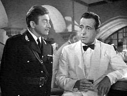
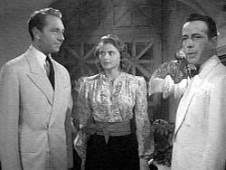
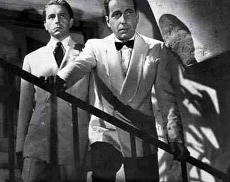
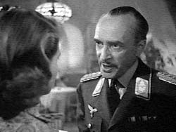
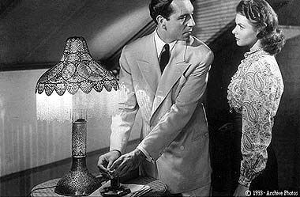

|

Texto de
Susana
Lopes de Alexandria

Ttulo
foi tirado de "Casablanca" (6)

|
 noite, no Rick's Caf, Rick conversa com o capito Renault e reclama que seus homens fizeram a maior baguna no bar, durante a revista. Renault pergunta a Rick se os salvo-condutos esto com ele ou no. Rick desconversa, perguntando a Renault se ele contra ou a favor da resistncia francesa. O capito est cada vez mais convencido de os documentos esto mesmo com Rick.  Algum tempo depois, Laszlo e Ilsa chegam ao Rick's Caf. Laszlo pede para conversar reservadamente com Rick e lhe oferece 200 mil francos pelos salvo-condutos. Rick recusa-se a vender. Laszlo pergunta o motivo e Rick sugere que ele pergunte sua esposa.  Laszlo ouve soldados alemes cantando o hino alemo no salo. Ento dirige-se aos msicos e pede que toquem a Marselhesa, o hino nacional francs. Todos os franceses presentes cantam, em protesto contra a invaso alem.  O major nazista Strasser, irritado com a iniciativa de Laszlo, ordena a Renault que o Rick's Caf seja fechado. Na sada, ameaa Ilsa: ou Laszlo volta para a Frana ocupada ou poder aparecer morto em Casablanca.  J tarde da noite. Ilsa e Laszlo voltam para casa. Laszlo conta a Ilsa que Rick recusou-se a vender os salvo-condutos e sugeriu que perguntasse a ela a razo. Ela no diz nada sobre seu envolvimento com Rick, e Laszlo no cobra nenhuma explicao da esposa, pois sabe que ela deve ter se sentido sozinha em Paris, enquanto ele estava num campo de concentrao. Em seguida, Laszlo sai para uma reunio clandestina da resistncia francesa. Ilsa sai logo depois e dirige-se ao Rick's Caf. |